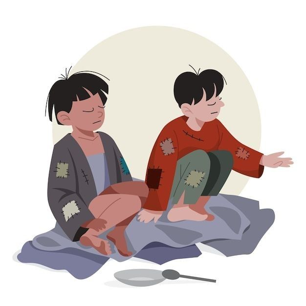

Equality
One of the main causes of extreme poverty is marginalization — the systemic barriers that lead to groups of people going without representation in their communities.

Increased education
According to UNESCO, if all students in low-income countries had just basic reading skills (nothing else), an estimated 171 million people could escape extreme poverty.

Food Security
Simply eating three meals a day and getting a healthy amount of calories and nutrients can go a long way to addressing the cycle of poverty.